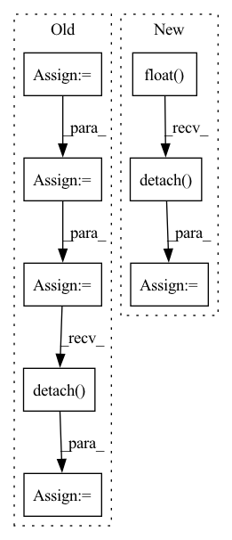

Pattern ID :554

Before Change
dists = cdist(anchor, positive, metric=self.metric)
// add 10 to false negative
dist_keypts = np.eye(dist_keypts.shape[0]) * 10 + dist_keypts.detach().cpu().numpy()
add_matrix = torch.zeros_like(dists)
add_matrix[np.where(dist_keypts < self.safe_radius)] += 10
dists = dists + add_matrix
pos_mask = torch.eq(torch.unsqueeze(pids, dim=1), torch.unsqueeze(pids, dim=0))
neg_mask = torch.logical_not(pos_mask)
// dists * pos_mask get the distance of each valid anchor-positive pair.
furthest_positive, _ = torch.max(dists * pos_mask.float(), dim=1)
// here we use "dists + 10000*pos_mask" to avoid the anchor-positive pair been selected.
closest_negative, _ = torch.min(dists + 1e5 * pos_mask.float(), dim=1)
// closest_negative_row, _ = torch.min(dists + 1e5 * pos_mask.float(), dim=0)
// closest_negative = torch.min(closest_negative_col, closest_negative_row)
average_negative = (torch.sum(dists, dim=-1) - furthest_positive) / (dists.shape[0] - 1)
diff = furthest_positive - closest_negative
accuracy = (diff < 0).sum() * 100.0 / diff.shape[0]
pos = dists - 1e5 * neg_mask.float()
pos_weight = (pos - self.pos_margin).detach()
pos_weight = torch.max(torch.zeros_like(pos_weight), pos_weight)
lse_positive = torch.logsumexp(self.log_scale * (pos - self.pos_margin) * pos_weight, dim=-1)
neg = dists + 1e5 * pos_mask.float()
neg_weight = (self.neg_margin - neg).detach()
neg_weight = torch.max(torch.zeros_like(neg_weight), neg_weight)
lse_negative = torch.logsumexp(self.log_scale * (self.neg_margin - neg) * neg_weight, dim=-1)
loss = F.softplus(lse_positive + lse_negative) / self.log_scale
After Change
pos_weight = torch.max(torch.zeros_like(pos_weight), pos_weight)
lse_positive = torch.logsumexp(-self.log_scale * (pos - self.pos_margin) * pos_weight, dim=-1)
neg = dists - 1e5 * (~neg_mask).float()
neg_weight = (neg - self.neg_optimal).detach()
neg_weight = torch.max(torch.zeros_like(neg_weight), neg_weight)
lse_negative = torch.logsumexp(self.log_scale * (neg - self.neg_margin) * neg_weight, dim=-1)
loss = F.softplus(lse_positive + lse_negative) / self.log_scale
In pattern: SUPERPATTERN
Frequency: 3
Non-data size: 8
Instances
Fragment ID: 2851691
Project Name: xuyangbai/d3feat.pytorch
Commit Name: f19b93196387b22f1cb416f9a0214b2cffaf8e5e
Time: 2020-07-16
Author: 653823597@qq.com
File Name: utils/loss.py
M Class Name: CircleLoss
N Class Name: CircleLoss
M Method Name: forward(4)
N Method Name: forward(4)
M Parent Class: nn.Module
N Parent Class: nn.Module
M File Name: utils/loss.py
N File Name: utils/loss.py
M Start Line: 123
M End Line: 152
N Start Line: 125
N End Line: 157
'>
Before Change
model.zero_grad()
pred = model(
torch.autograd.Variable(batch).to(device), lengths.cpu().numpy()
) //// perform forward pass
pred = torch.squeeze(pred)
loss = criterion(
pred.to(device), torch.autograd.Variable(targets.float()).to(device)
) //// compute loss
loss.backward() //// perform backward pass
optimizer.step() //// update weights
pred_val = pred >= 0.5 //// get predictions
y_true += list(targets.int().numpy()) //// accumulate targets from batch
y_pred += list(
pred_val.data.int().detach().cpu().numpy()
) //// accumulate preds from batch
total_loss += loss //// accumulate train loss
After Change
y_true += list(targets.float().numpy())
//// accumulate preds from batch
y_pred += list(pred.data.float().detach().cpu().numpy())
//// accumulate train loss
total_loss += loss
'>
Fragment ID: 2851690
Project Name: shahrukhx01/siamese-nn-semantic-text-similarity
Commit Name: f3d054dd14ef532c408b1306c3341115777ac22f
Time: 2021-12-30
Author: sk28671@gmail.com
File Name: siamese_sts/trainer/train.py
M Class Name: AnonimousClass
N Class Name: AnonimousClass
M Method Name: train_model(6)
N Method Name: train_model(6)
M Parent Class:
N Parent Class:
M File Name: siamese_sts/trainer/train.py
N File Name: siamese_sts/trainer/train.py
M Start Line: 16
M End Line: 47
N Start Line: 16
N End Line: 59
'>
Before Change
batch, targets, lengths
) //// sorts the batch wrt the length of sequences
pred = model(
torch.autograd.Variable(batch).to(device), lengths.cpu().numpy()
) //// perform forward pass
pred = torch.squeeze(pred)
loss = criterion(
pred.to(device), torch.autograd.Variable(targets.float()).to(device)
) //// compute loss
pred_val = pred >= 0.5 //// get predictions
y_true += list(targets.int())
y_pred += list(pred_val.data.int().detach().cpu().numpy())
total_loss += loss
acc = accuracy_score(y_true, y_pred) //// computing accuracy using sklearn"s function
After Change
)
y_true += list(targets.float())
y_pred += list(pred.data.float().detach().cpu().numpy())
total_loss += loss
//// computing accuracy using sklearn"s function
acc = r2_score(y_true, y_pred)
'>
Fragment ID: 2851688
Project Name: shahrukhx01/siamese-nn-semantic-text-similarity
Commit Name: f3d054dd14ef532c408b1306c3341115777ac22f
Time: 2021-12-30
Author: sk28671@gmail.com
File Name: siamese_sts/trainer/train.py
M Class Name: AnonimousClass
N Class Name: AnonimousClass
M Method Name: evaluate_dev_set(5)
N Method Name: evaluate_dev_set(5)
M Parent Class:
N Parent Class:
M File Name: siamese_sts/trainer/train.py
N File Name: siamese_sts/trainer/train.py
M Start Line: 78
M End Line: 95
N Start Line: 91
N End Line: 116